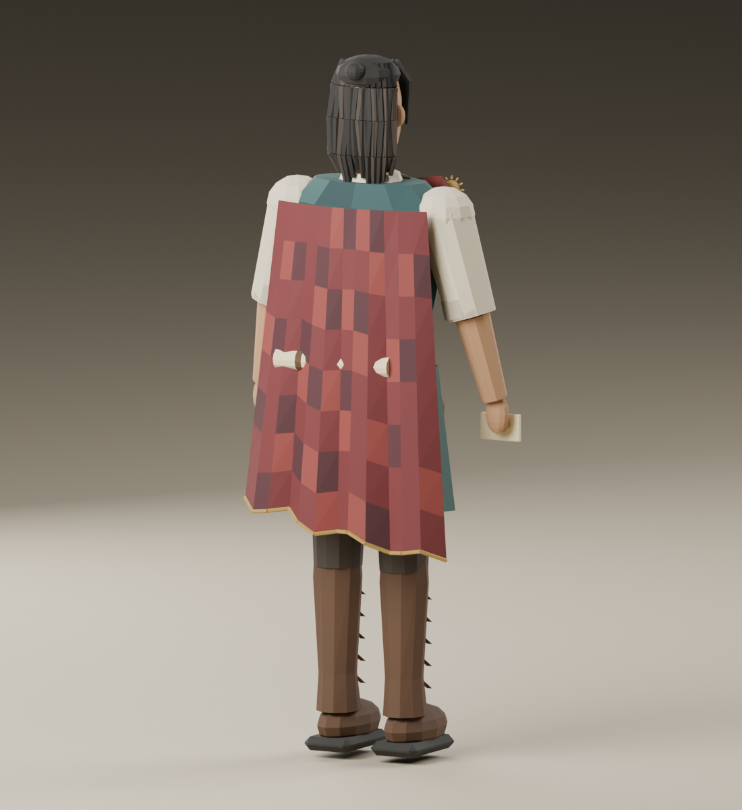
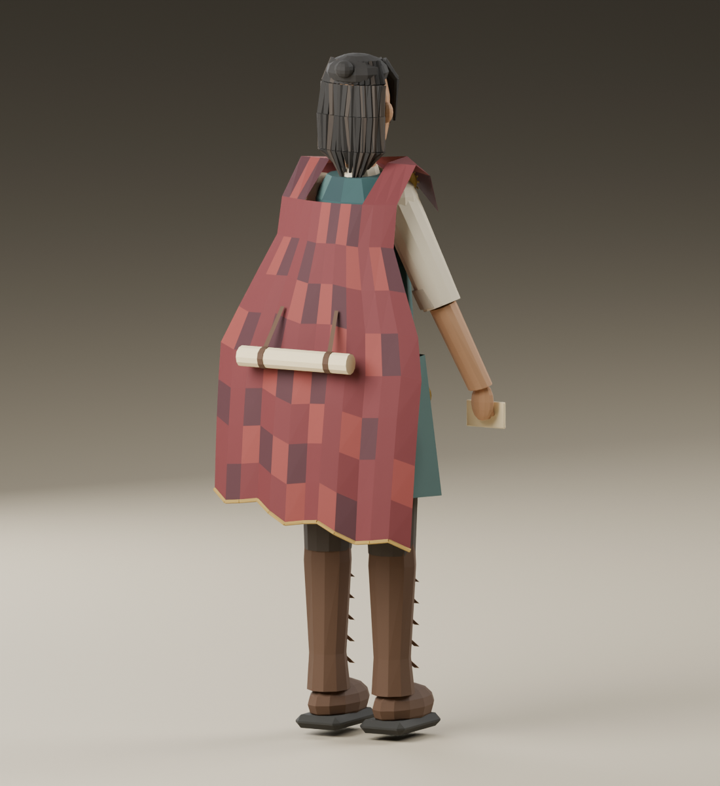
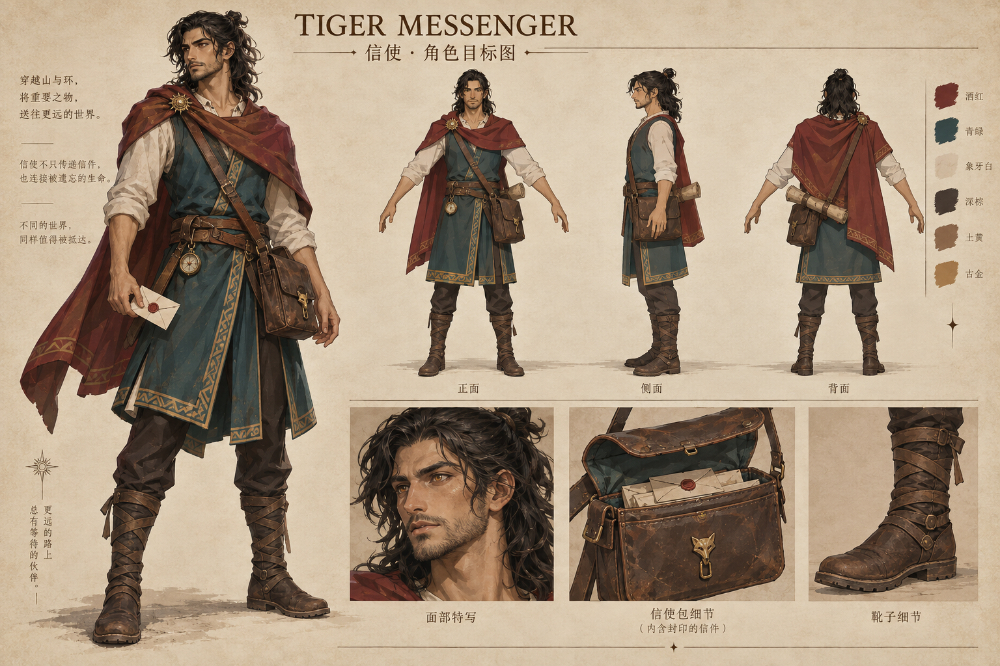
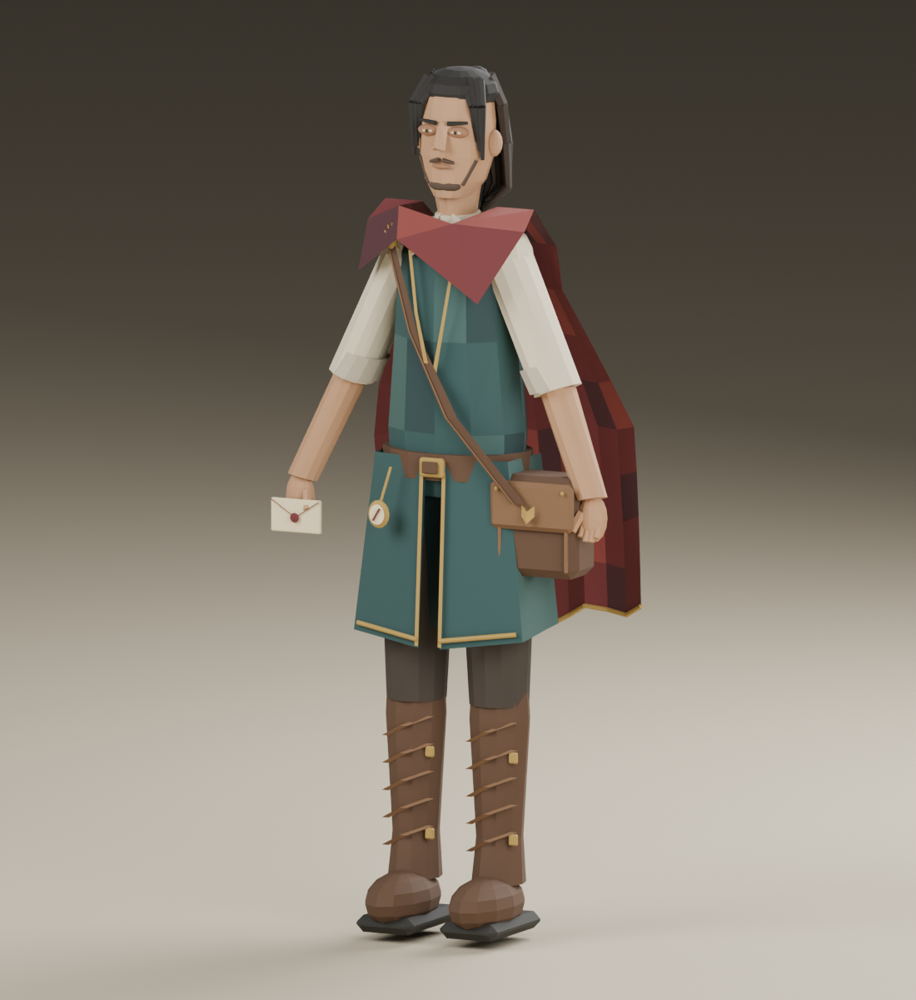

本轮修正：胸前披布经过左右肩连续连接到背后，是一张连通网格；肩宽由约57厘米收至31.8厘米，与站立双脚外侧同宽，头部比例保留。160个动作姿态下，斗篷与卷轴、袖子、前臂、衣摆、裤腿及靴子的相交检查通过。游戏使用同一份更新几何。Godot同步GLB资产，尚未把这套人形替换进Godot玩家控制器。




酒红披风、青绿长衣、象牙白卷袖、右肩日轮胸针、左胯信包。信封挂在右手关节。原数字智能体源文件保留。
目前使用分关节的程序动画，尚未做蒙皮布料变形。近景脸部和头发仍可在这一版上继续雕修。